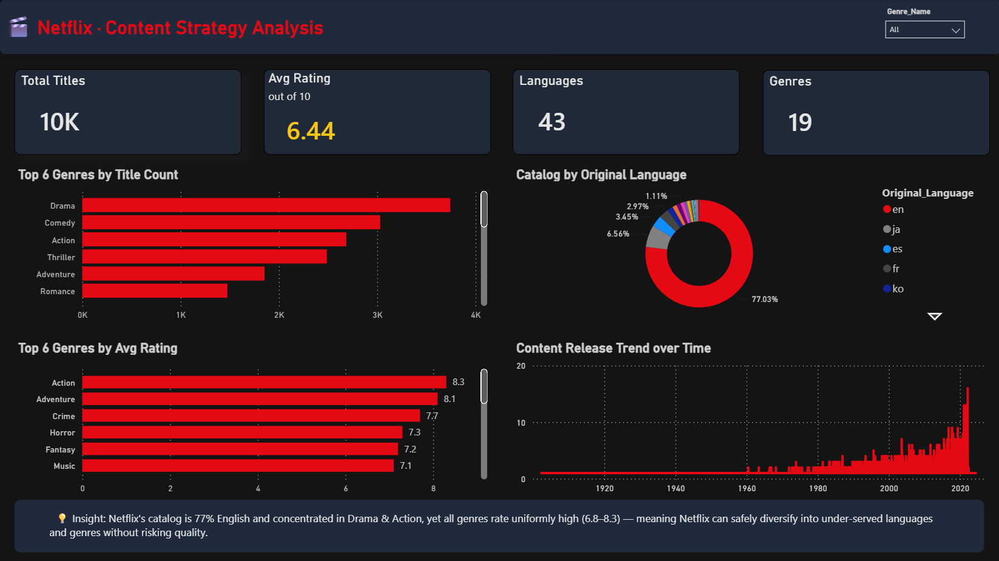
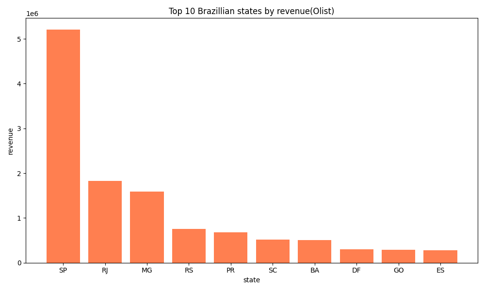

Projects
Real, end-to-end data work — live apps, BI dashboards, and SQL analysis.

Remote Job Market Analyzer
A live, deployed web app that pulls real-time remote-job postings from the Remotive REST API and visualizes hiring trends — KPI cards, filters, a clickable jobs table, and CSV export.

Starbucks Store Performance
Analyzed 45,000+ transactions to diagnose a regional sales decline. Found the dip was concentrated in 2 of 5 stores and that a price hike was masking a ~12% footfall crash — with 3 recommendations.

Netflix Content Strategy
Modeled 10,000+ titles into a star schema and analyzed catalog by genre, language, and rating with DAX — including catching and fixing a data-integrity bug that was inflating counts.

Sales & SQL Analysis — Olist
Explored a 100,000+ order Brazilian e-commerce dataset. Wrote a 3-table chain JOIN (items → orders → customers) in SQL to compute revenue by state, visualized with Matplotlib.